תבניות העיצוב של בית הספרמרכזי ידע · איפה בוחרים תבנית
בלשונית **הגדרות** של בית הספר, בקטע **תבנית בית הספר**, לוחצים על התבנית הרצויה. התבנית המסומנת בווי היא הפעילה.
school-settings-template-grid
גולשים לכתובת ההתחברות של המערכת ומגיעים למסך ההתחברות של WHITEBOARD.
gs-login-card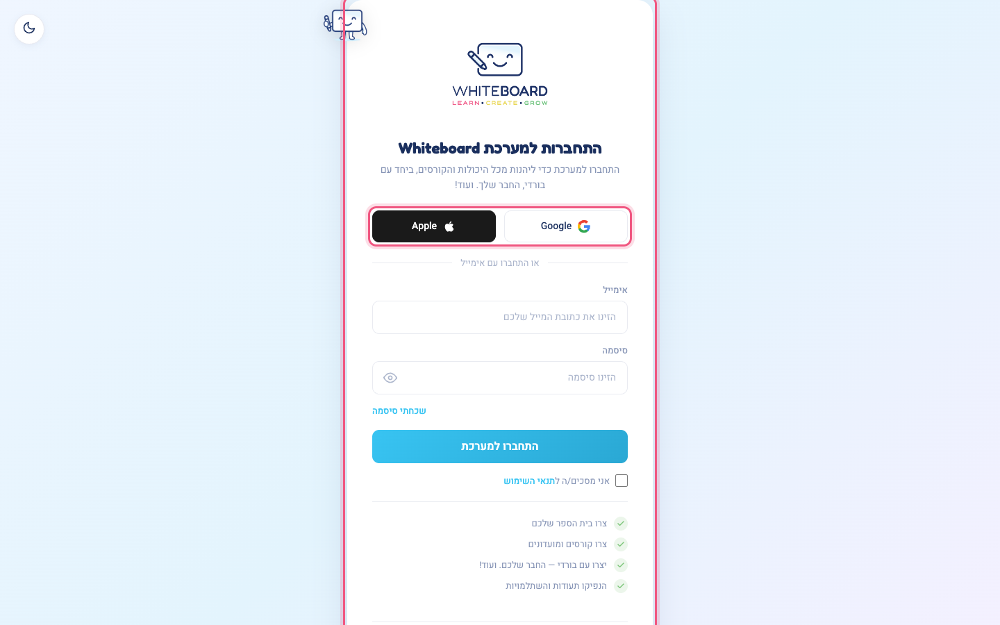
3. מסמנים את תיבת ההסכמה ל**תנאי השימוש**. 4. לוחצים על **התחברו למערכת**.
gs-login-email-form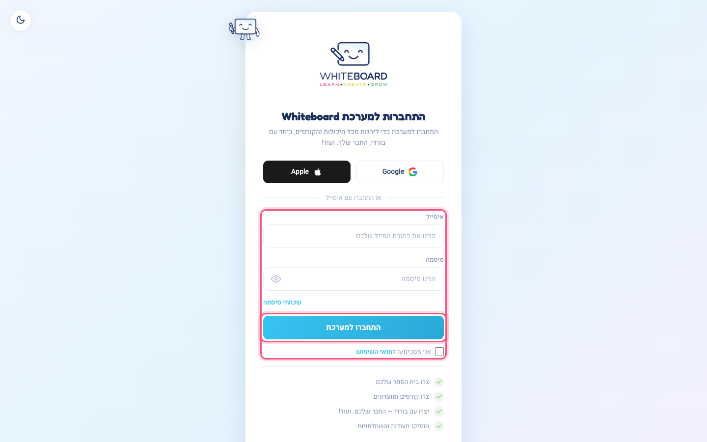
בסיידבר הימני לוחצים על **לוח הבקרה**. בראש המסך תקבלו ברכת שלום עם תמונת מצב מהירה — כמה תלמידים פעילים עכשיו וכמה משימות מחכות. לצד הברכה שני כפתורים מהירים: **צור קורס חדש** ו**ייצוא דוח**.
gs-dashboard-overview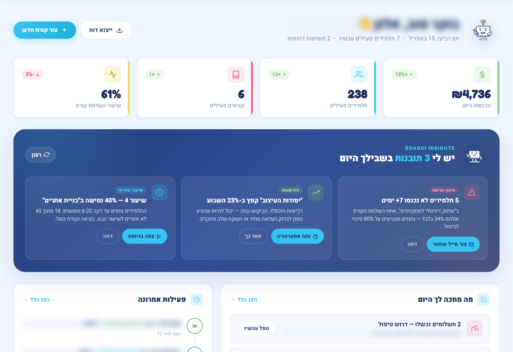
לכל מדד מוצמד חץ שינוי (ירוק לעלייה, ורוד לירידה) ביחס לתקופה הקודמת — כך רואים מגמה במבט אחד.
gs-dashboard-kpi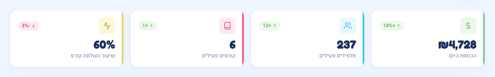
פאנל **BOARDi Insights** מציג תובנות שבורדי הפיק מהנתונים שלכם: תלמידים בסיכון נטישה, קורס שמזנק במכירות, שיעור שתלמידים נוטשים באמצע. לכל תובנה מוצמד כפתור פעולה — למשל **צור מייל שחזור** — כך שאפשר לטפל בה בלי לעזוב את המסך. כפתור **רענן** מבקש מבורדי תובנות עדכניות.
gs-dashboard-insights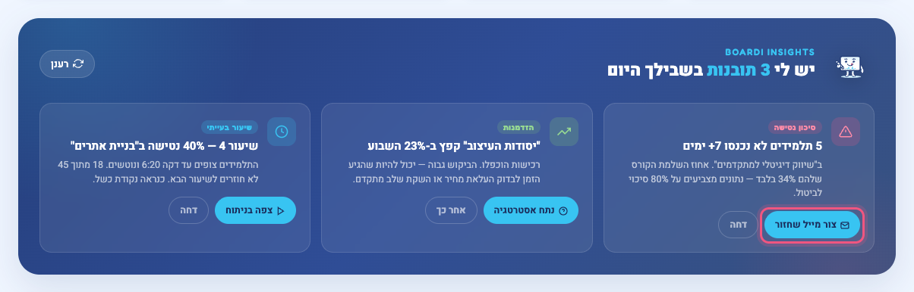
- **מה מחכה לך היום** — משימות שדורשות טיפול: תשלומים שנכשלו, תלמידים שממתינים לאישור, הודעות במועדון, שידור חי מתקרב. לכל משימה כפתור פעולה ישיר. - **פעילות אחרונה** — פיד של אירועים: רכישות, סיומי קורס, הצטרפויות למועדון וביקורות.
gs-dashboard-tasks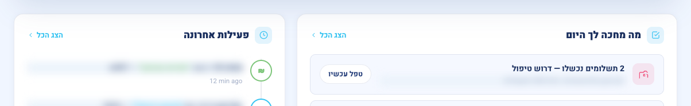
המתג יושב בתחתית הסיידבר הימני, מתחת לכותרת "מצב תצוגה": שני כפתורים זה לצד זה — **תלמיד** ו**מרצה**. הכפתור המודגש הוא המצב הנוכחי.
gs-mode-switcher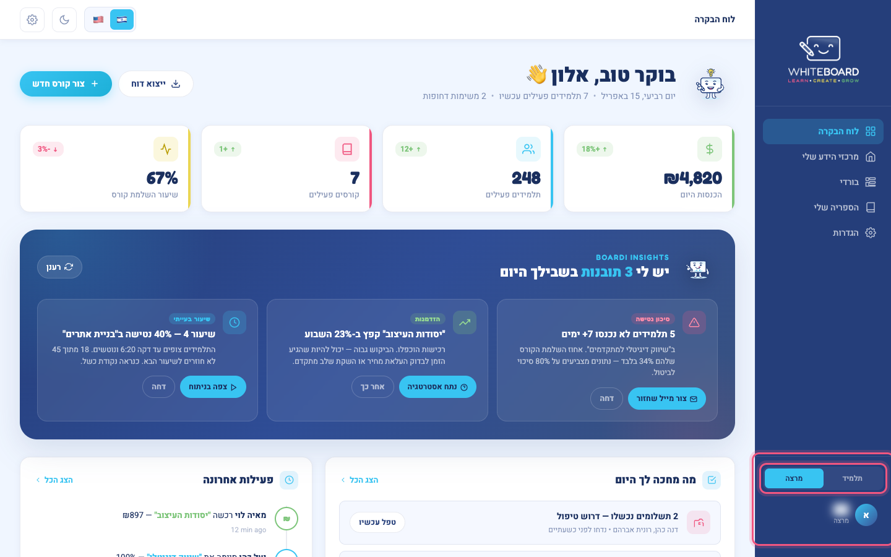
פספסתם משהו או רוצים לרענן? לוחצים על אייקון בורדי בסרגל העליון ובוחרים בתפריט **המדריכים שלי**. משם מפעילים מחדש את סיור ההיכרות או כל מדריך אחר.
gs-walkme-relaunch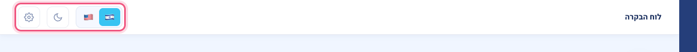
באזור **פרטים אישיים** מעדכנים שם פרטי, שם משפחה וטלפון. שדה האימייל נעול — לא ניתן לשנות את כתובת האימייל של החשבון.
gs-profile-details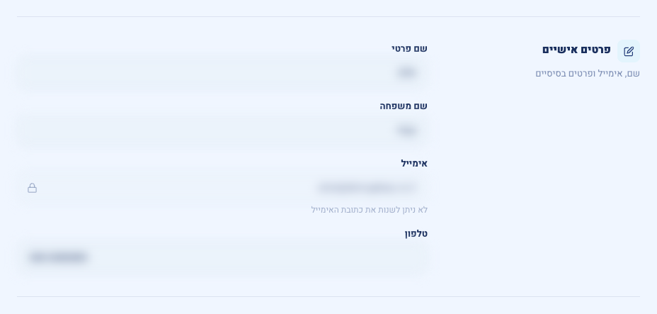
כפתור השמירה יושב בסרגל העליון ומשקף את המצב: ברגע שנוגעים בשדה הוא מציג "שינויים שלא נשמרו", ואחרי לחיצה — "ההגדרות עודכנו".
gs-profile-save-state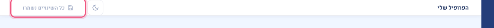
- **אנליטיקס** — נתוני צפייה והתקדמות. - **בורדי** — העוזר החכם של הקורס.
course-header-tabs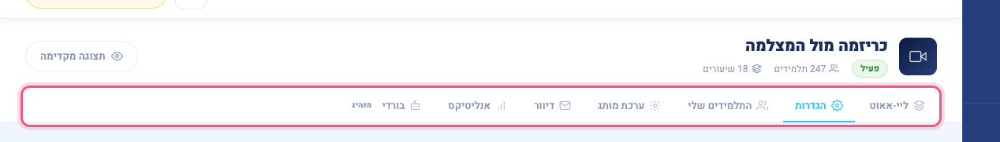
תלמיד שנכנס לקורס מקבל את נגן הקורס: סרגל צד עם רשימת הפרקים והשיעורים ומד התקדמות אישי, אזור השיעור במרכז, וסרגל תחתון עם כפתורי **הקודם** ו**הבא** ו**סמן כהושלם**. כל מה שתבנו בהמשך — מבנה, תוכן וערכת מותג — מתלבש על התבנית הזאת.
course-student-view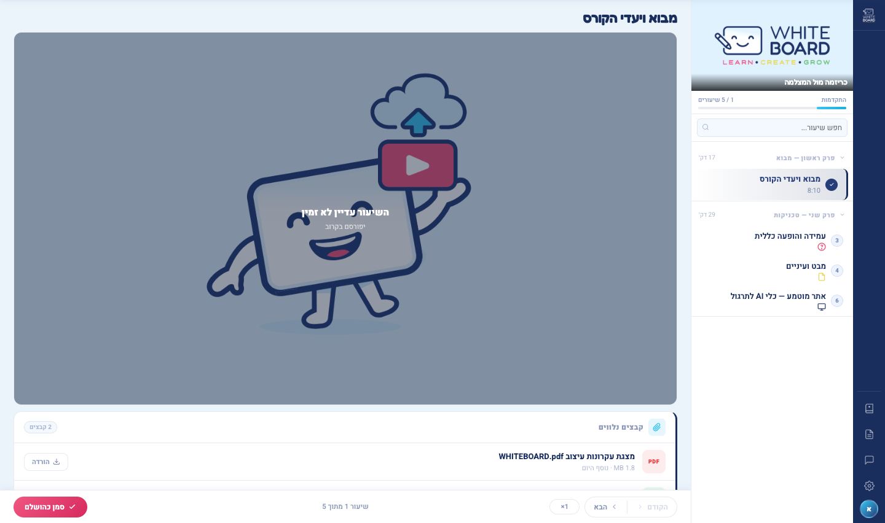
בעמוד הקורס, בפינת הסרגל העליון, לוחצים על **מצב עריכה**. סרגל הצד מציג עכשיו לכל פרק ושיעור כפתורי עריכה, ידית גרירה וכפתור הוספה.
course-chapters-sidebar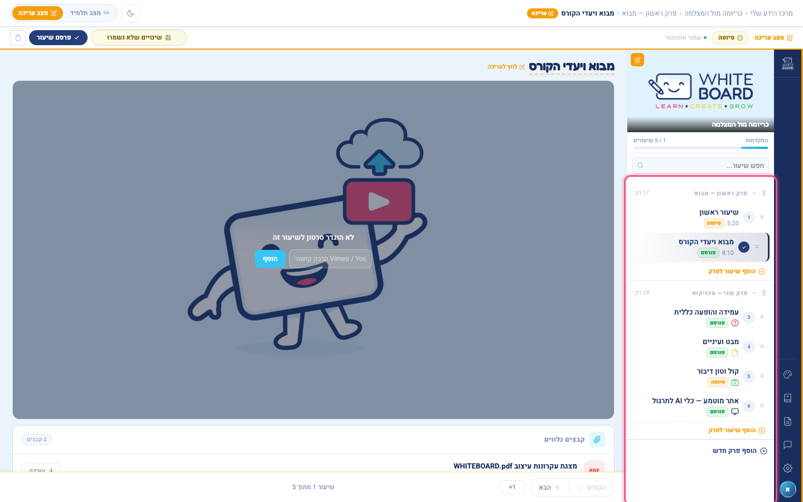
בתחתית רשימת הפרקים לוחצים על **הוסף פרק חדש** ונותנים לפרק שם. ליד שם הפרק מוצג משך הצפייה הכולל של השיעורים שבו.
course-add-chapter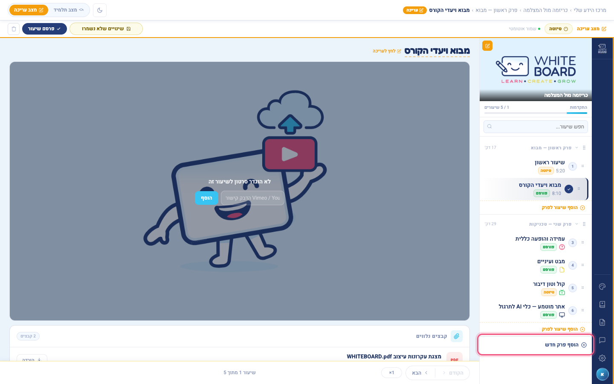
התלמיד רואה את אותו סרגל צד — בלי כלי העריכה: רשימת פרקים עם משך צפייה, שיעורים עם סימון "הושלם" על מה שכבר נצפה, ומד התקדמות אישי ("1 / 5 שיעורים") בראש הסרגל. שיעורים בטיוטה לא מוסתרים מהרשימה אלא מוצגים כ"לא זמין עדיין".
course-student-progress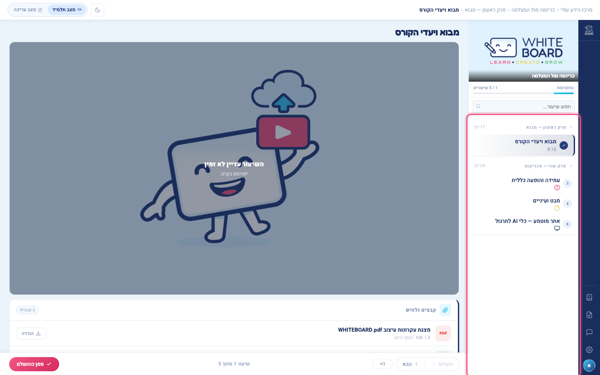
course-lesson-types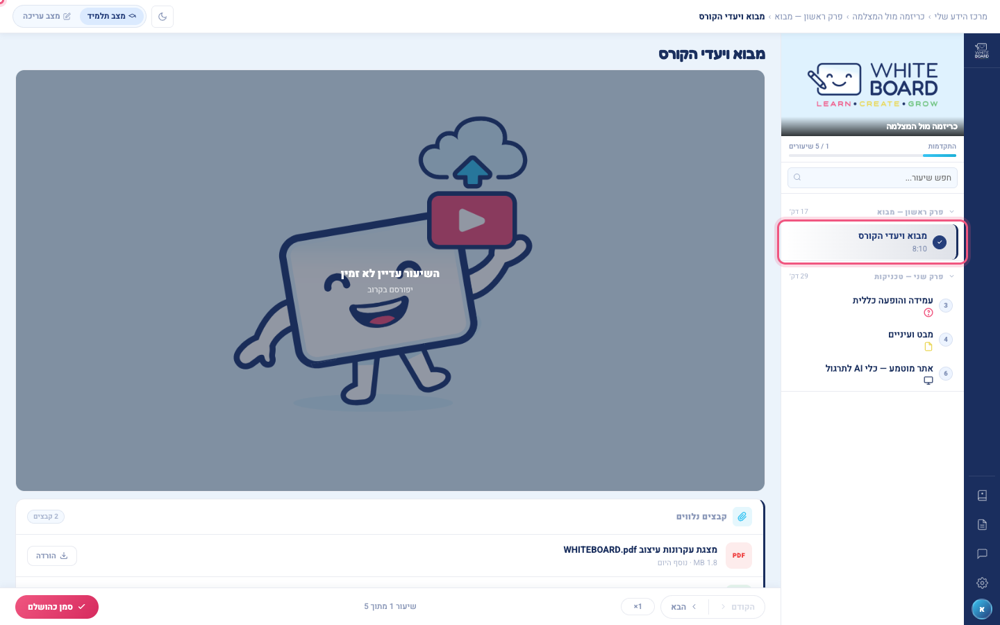
במצב עריכה, בתחתית תוכן השיעור, לוחצים על **הוסף בלוק תוכן**. נפתח חלון בחירה עם כל סוגי הבלוקים.
course-block-picker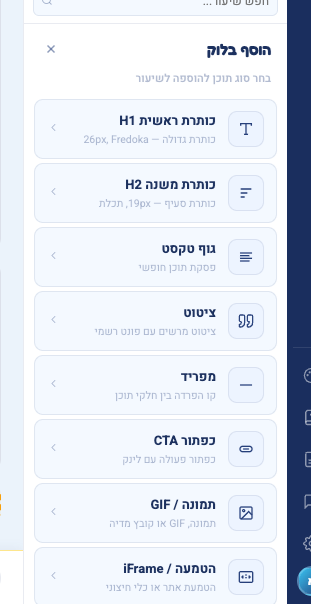
מתחת לתוכן השיעור יש כרטיס **קבצים נלווים** — שם מוסיפים מצגות, טבלאות וכל קובץ שהתלמידים צריכים להוריד. לוחצים על **הוסף קובץ**, וכל קובץ מוצג עם שם, סוג וכפתור **הורדה**.
course-files-card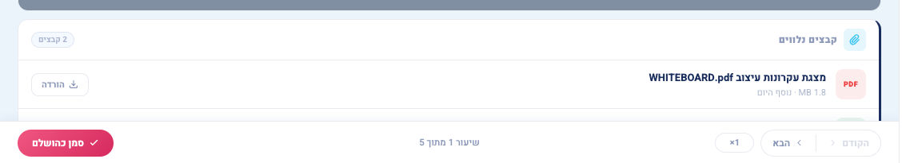
התלמיד מקבל את עמוד השיעור המורכב: הסרטון למעלה, מתחתיו הבלוקים לפי הסדר שקבעתם, וכרטיס הקבצים הנלווים עם כפתור **הורדה** ליד כל קובץ. כל הבלוקים מוצגים בעיצוב של ערכת המותג — הגופנים והצבעים שבחרתם, בלי כלי העריכה.
course-student-lesson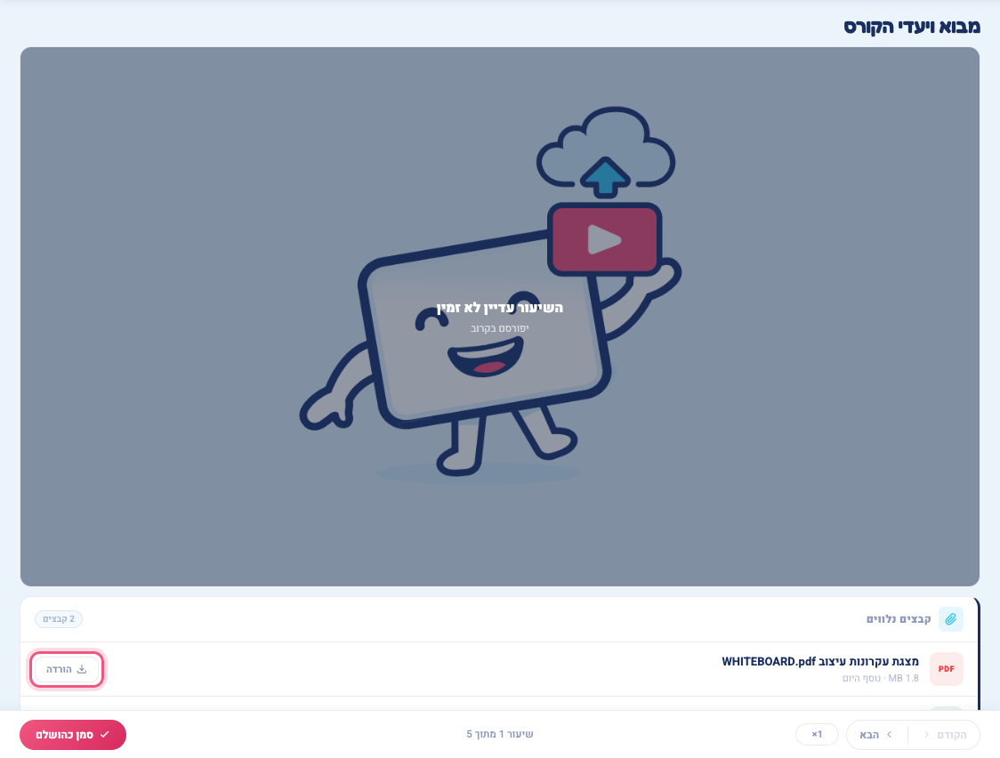
נכנסים לשיעור הרצוי ועוברים ל**מצב עריכה**. שיעור וידאו שעדיין אין בו סרטון מציג את ההודעה "לא הוגדר סרטון לשיעור זה" עם אפשרויות ההוספה.
course-video-empty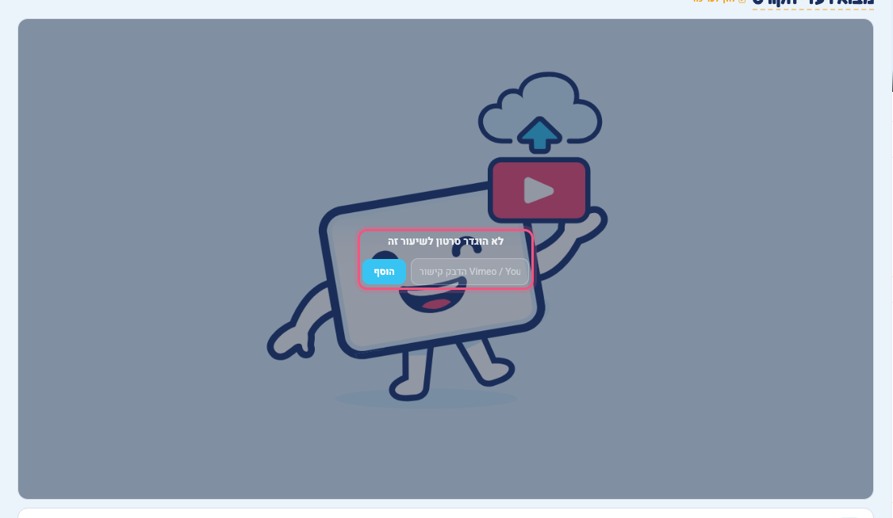
אפשר ללחוץ **השהה העלאה** ולהמשיך מאוחר יותר, או **בטל העלאה** — ביטול עוצר את התהליך ותצטרכו להתחיל מחדש.
course-upload-progress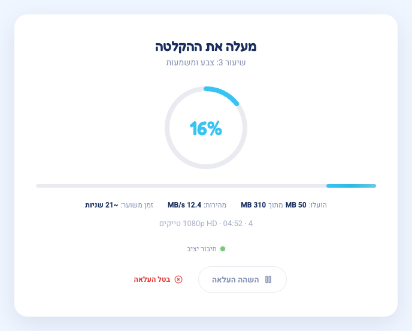
- **פרסם לשיעור** — הסרטון משתבץ בשיעור כפי שהוא. - **פתח בעורך** — עוברים לעורך הווידאו המובנה לחיתוכים, לוגו, פתיח וכתוביות לפני הפרסום.
course-upload-success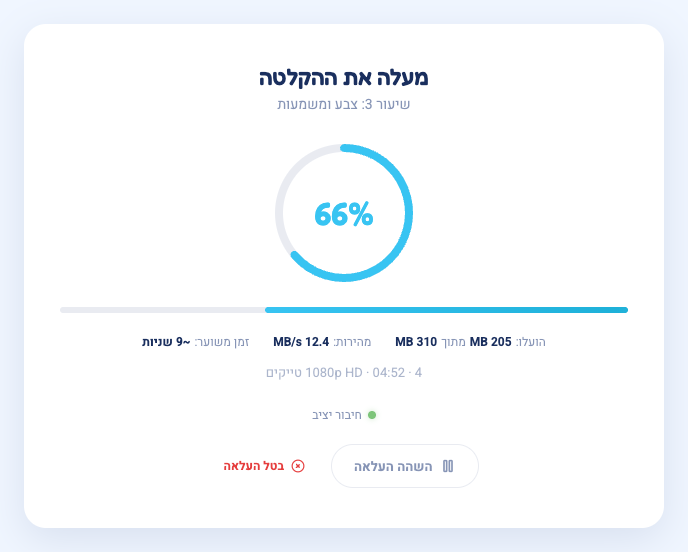
בתפריט הצד לוחצים על **הספריה שלי**.
course-library-nav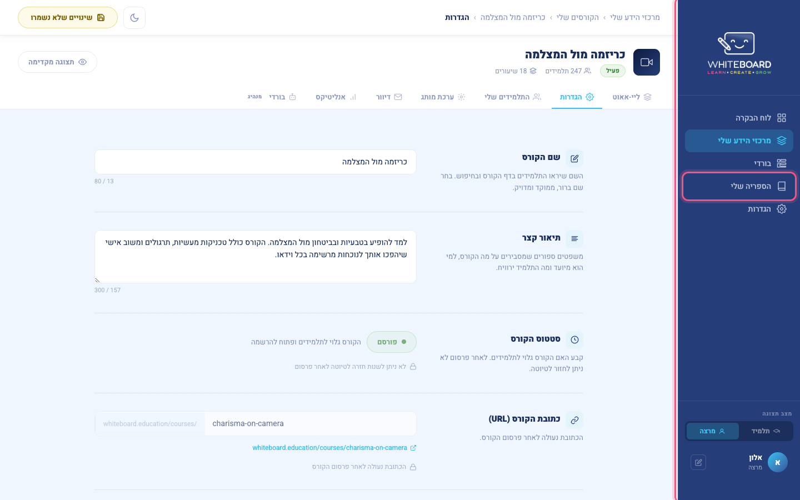
בחלק העליון עורכים את **שם הקורס** ואת **התיאור הקצר** — אלה מופיעים בדף הקורס ובחיפוש. כאן גם נמצאים **סטטוס הקורס** (טיוטה או פורסם) ו**כתובת הקורס (URL)** — הכתובת הייחודית שבה תלמידים מגיעים לקורס.
course-settings-general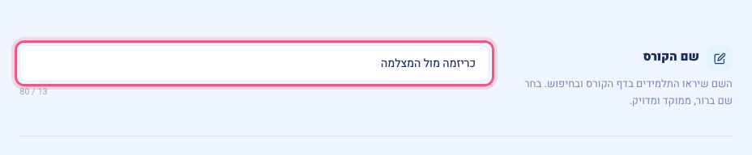
בוחרים בין **חינם** — כל תלמיד יכול לגשת ללא תשלום — ל**בתשלום**, שבו התלמיד רוכש גישה לקורס וקובעים מחיר בשקלים. את התמחור אפשר לשנות בכל עת.
course-settings-pricing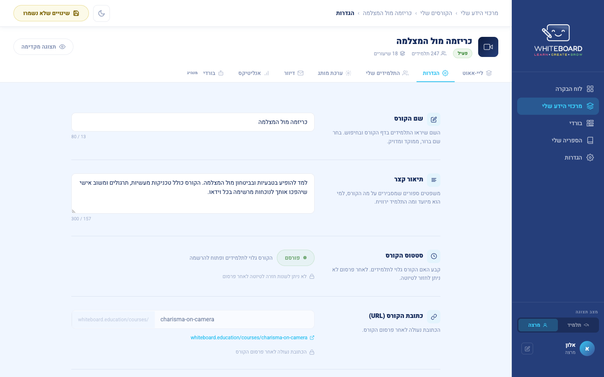
בכרטיס **צבעים** בוחרים צבע ראשי, צבע משני וצבע רקע — בבורר צבע או בהקלדת ערך HEX. בכרטיס **טיפוגרפיה** בוחרים גופן לכותרות, גופן לגוף הטקסט וגודל טקסט.
course-brand-editor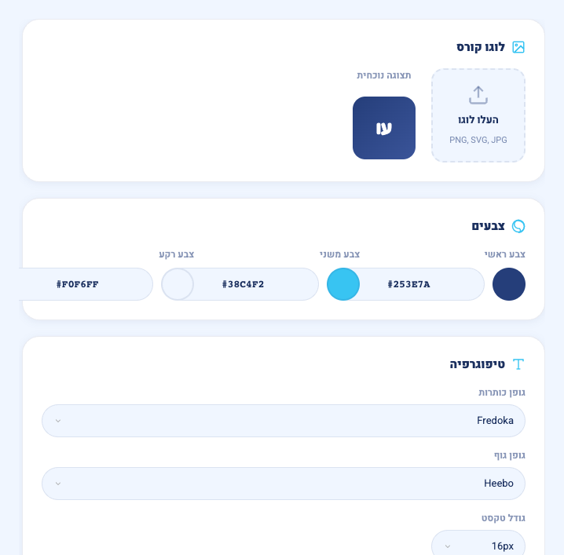
פאנל **תצוגה מקדימה** מציג את דף הקורס עם הערכה החדשה בעדכון חי. כשמרוצים — לוחצים **שמור שינויים**. התחרטתם? **אפס לברירת מחדל** מחזיר את עיצוב המערכת.
course-brand-preview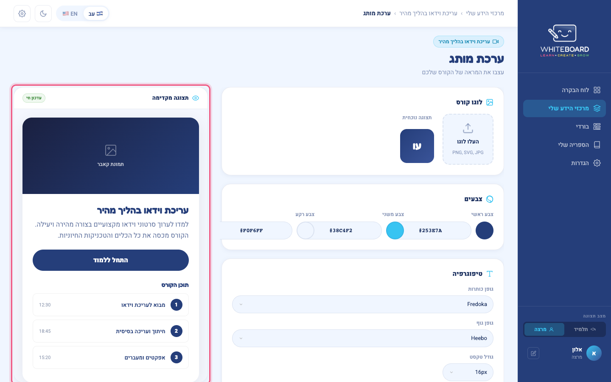
בטאב **הגדרות** של הקורס, בסעיף **סטטוס הקורס**, מעבירים את הסטטוס מ**טיוטה** ל**פורסם**. קורס מפורסם גלוי לתלמידים ופתוח להרשמה.
course-publish-status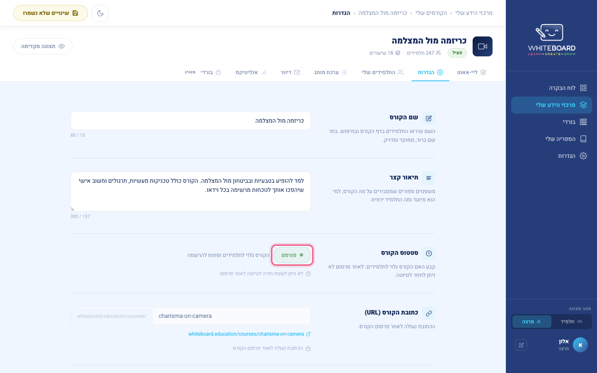
שיעור בטיוטה מציג לתלמידים הודעת "השיעור עדיין לא זמין — יפורסם בקרוב", כך שאפשר לבנות מראש את כל המבנה ולחשוף שיעור אחרי שיעור.
course-publish-lesson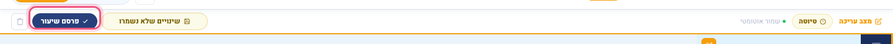
הכתובת הייחודית של הקורס מוגדרת בטאב **הגדרות**, בסעיף **כתובת הקורס (URL)** — זו הכתובת שמעבירים לתלמידים או משבצים בדף המכירה.
course-share-url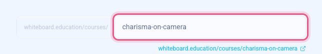
בקורס מפורסם התלמיד רואה רק את השיעורים שפרסמתם. שיעור שעדיין בטיוטה מציג במקום הסרטון את ההודעה "השיעור עדיין לא זמין — יפורסם בקרוב", כך שהתלמידים יודעים שיש עוד תוכן בדרך.
course-student-unpublished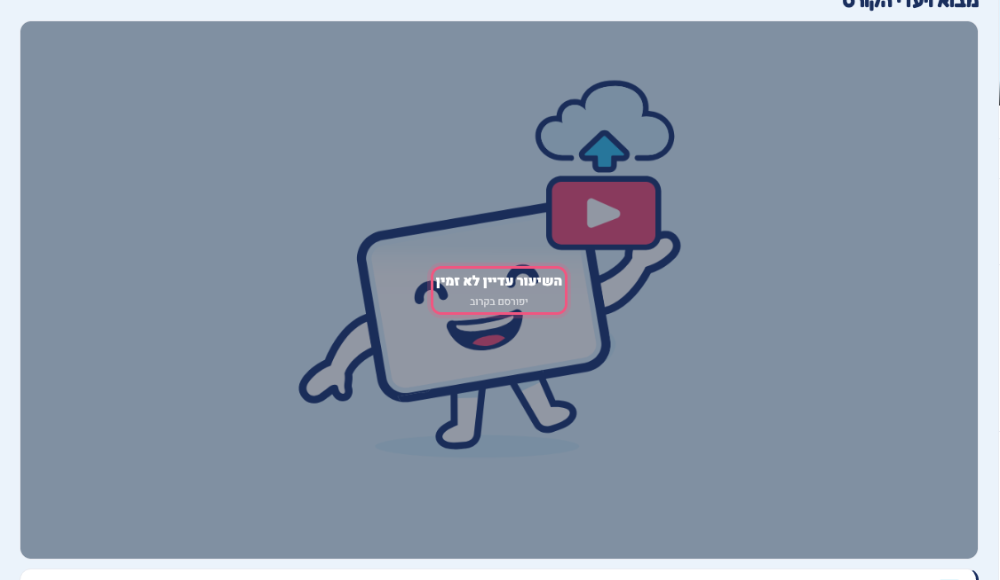
4. **עורך הווידאו** — חיתוכים, לוגו, פתיח וסגיר, מעברים, כותרות וכתוביות. 5. **העלאה ופרסום** — הסרטון עולה לאחסון של WHITEBOARD, מעובד ומשובץ בשיעור.
studio-lobby-overview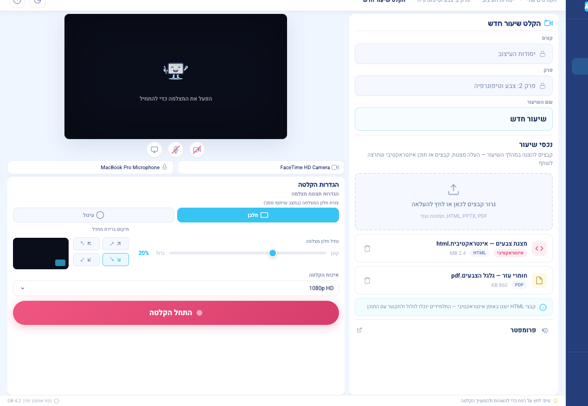
בצד התצוגה המקדימה מפעילים את המצלמה, המיקרופון ושיתוף המסך, ובוחרים את ההתקנים מהרשימות. תחת **הגדרות הקלטה** קובעים את צורת חלון המצלמה במצב שיתוף מסך (מלבן או עיגול), את גודלו ואת מיקום ברירת המחדל שלו על המסך, ובוחרים איכות הקלטה.
studio-lobby-setup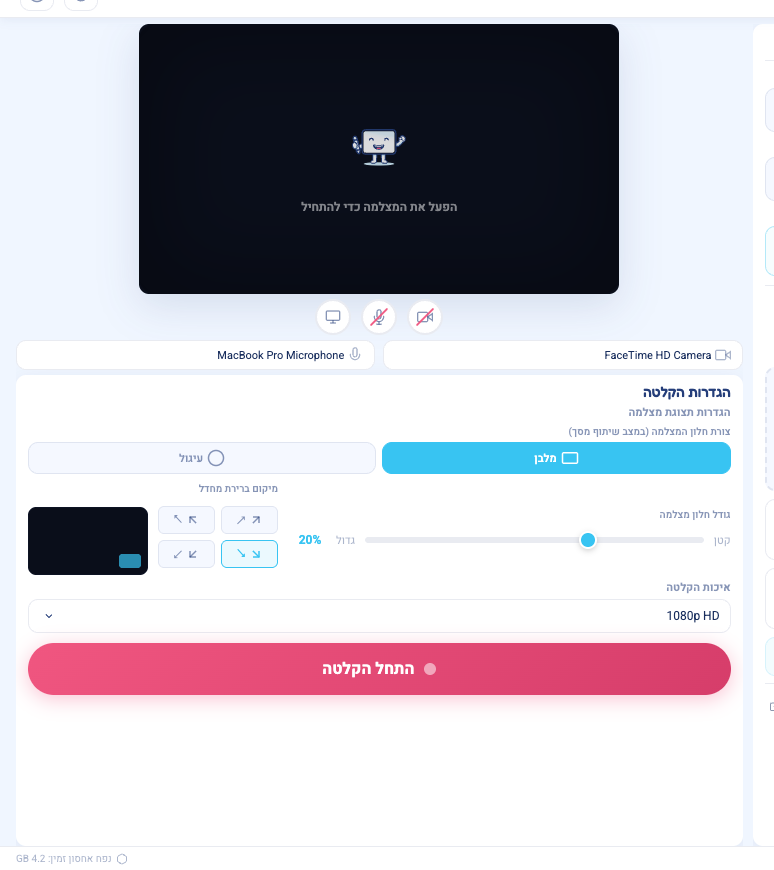
לוחצים **התחל הקלטה**. המערכת מציגה ספירה לאחור וההקלטה יוצאת לדרך, עם מונה זמן וסימון REC על המסך.
studio-record-cta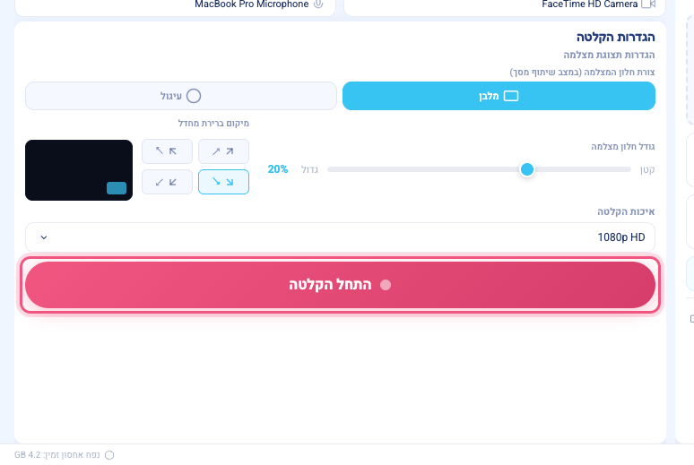
בזמן ההקלטה אפשר להחליף מצב בכל רגע: **מצלמה**, **מסך + מצלמה** או **מסך**. כפתור **נכסים** פותח את רשימת הקבצים שהעליתם בלובי — לוחצים **הצג** כדי להקרין נכס, או מדביקים קישור לאתר להצגה חיה.
studio-mode-switcher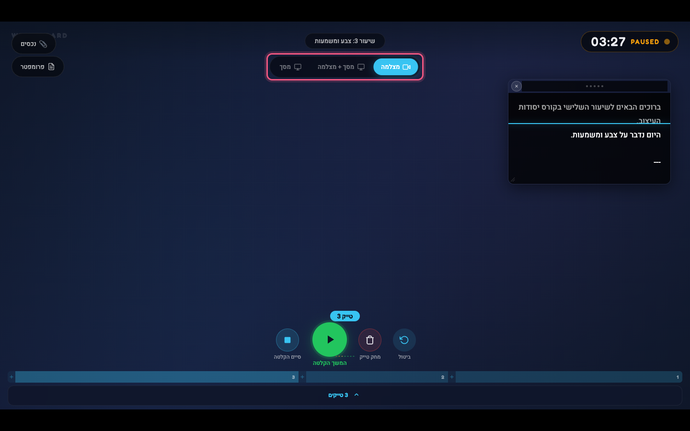
הכפתור המרכזי מתחיל ועוצר טייק. לא יצא טוב? מוחקים את הטייק האחרון ומקליטים שוב — כל הטייקים נשמרים לבחירה בשלב הסקירה. לסיום לוחצים **סיים הקלטה** ומאשרים **סיים ושמור**.
studio-record-controls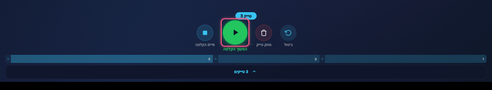
- **קו מיקוד** — הקו שמסמן את השורה הנוכחית: שליש עליון, מרכז או שליש תחתון. - **מראה (Mirror)** — היפוך הטקסט לעבודה עם זכוכית טלפרומפטר.
studio-prompter-panel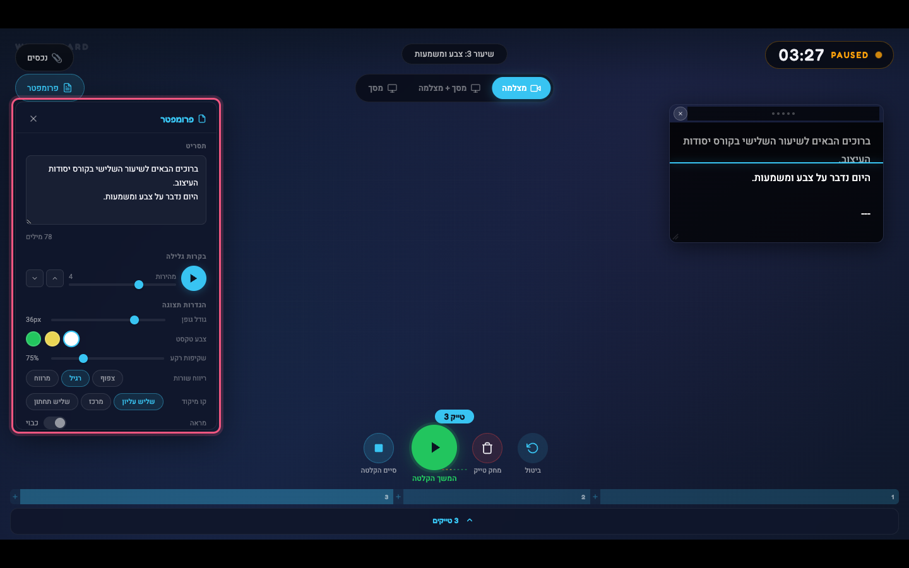
- **על המסך** — הפרומפטר צף מעל אזור ההקלטה. אפשר לגרור אותו לכל מקום ולשנות את גודלו. - **מסך חיצוני** — הפרומפטר נפתח בחלון נפרד למסך שני, עם סרגל שליטה משלו: הפעלה, מהירות, גודל גופן ומראה.
studio-prompter-overlay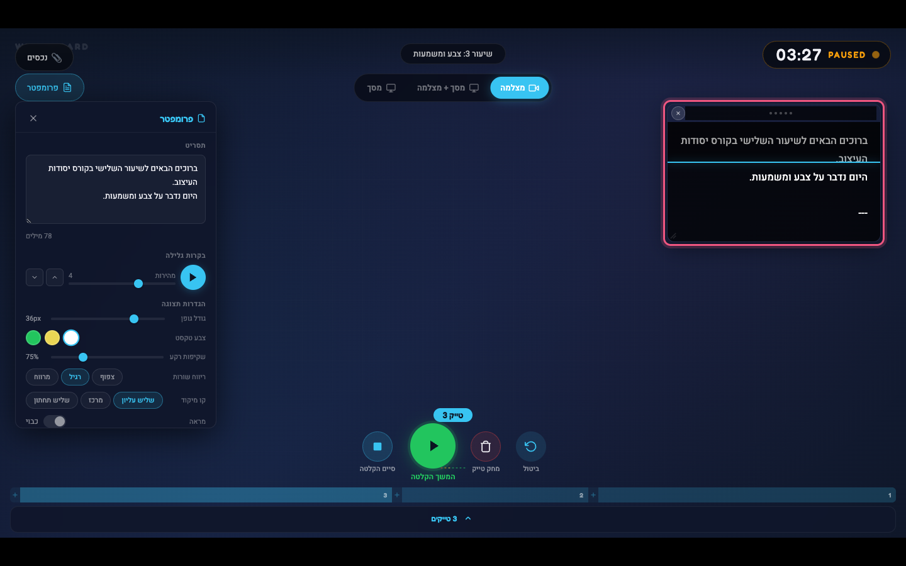
בנגן שבמרכז המסך צופים בהקלטה, ומתחתיו **ציר הטייקים** — כל טייק מוצג כמקטע צבעוני על ציר הזמן, כך שקל לקפוץ בין טייקים ולהשוות. בצד מוצגת **רשימת טייקים** עם סיכום: משך כולל ומספר טייקים.
studio-takes-list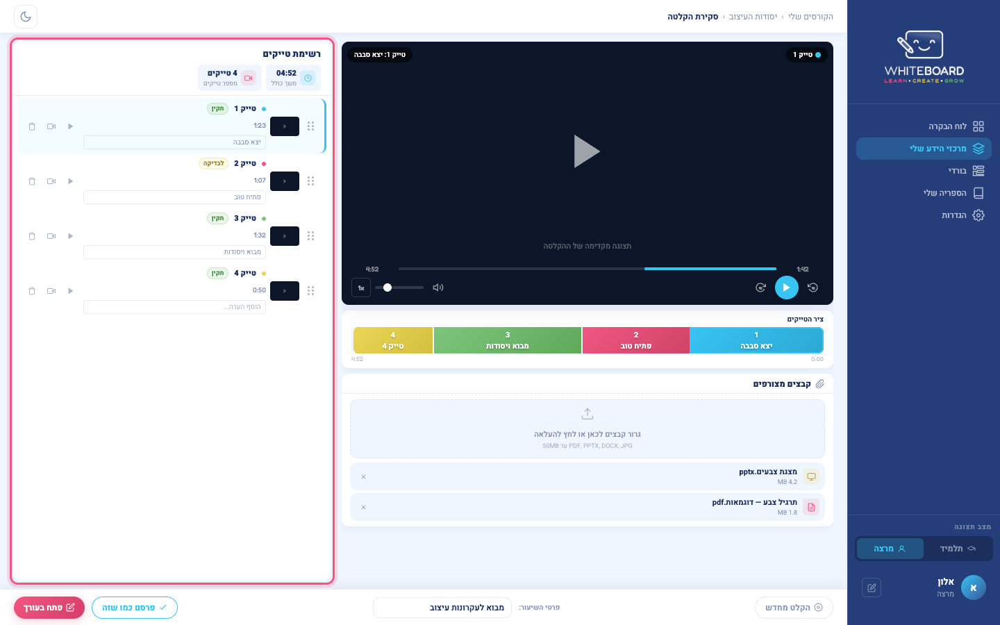
- **פתח בעורך** — עוברים לעורך הווידאו לחיתוכים, לוגו, פתיח, מעברים וכתוביות. - **פרסם כמו שזה** — הסרטון מתפרסם כפי שהוקלט. המערכת תזכיר לכם מה מוותרים עליו: חיתוכים, לוגו מותג, פתיח וסגיר וכתוביות.
studio-review-actions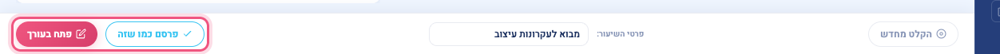
פאנל הכלים מחולק לטאבים: **חיתוך**, **לוגו**, **פתיח / סגיר**, **מעברים**, **כתוביות**, **כותרות** ו**פריסט**.
studio-editor-tabs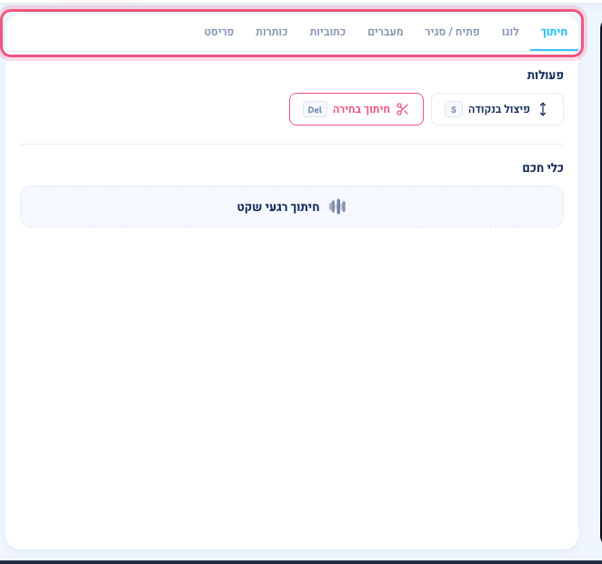
בטאב **מעברים** גוררים סוג מעבר (Fade, Dissolve, Slide, Zoom) אל המרווח בין קטעים בטיימליין, וקובעים משך לכל מעבר. בטאב **כותרות** בוחרים סגנון, מקלידים טקסט, גוררים את הכותרת למיקום הרצוי בתצוגה המקדימה וקובעים מתי ולכמה זמן תוצג.
studio-editor-timeline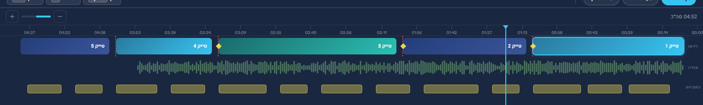
נכנסים לעורך הכתוביות מטאב **כתוביות** בעורך הווידאו ולוחצים **יצירה אוטומטית**. האודיו נשלח לתמלול AI וחוזר כרשימת כתוביות מסונכרנות לזמנים. אם כבר יש לכם קובץ כתוביות, אפשר במקום זה ללחוץ **ייבוא SRT**.
studio-subtitles-autogen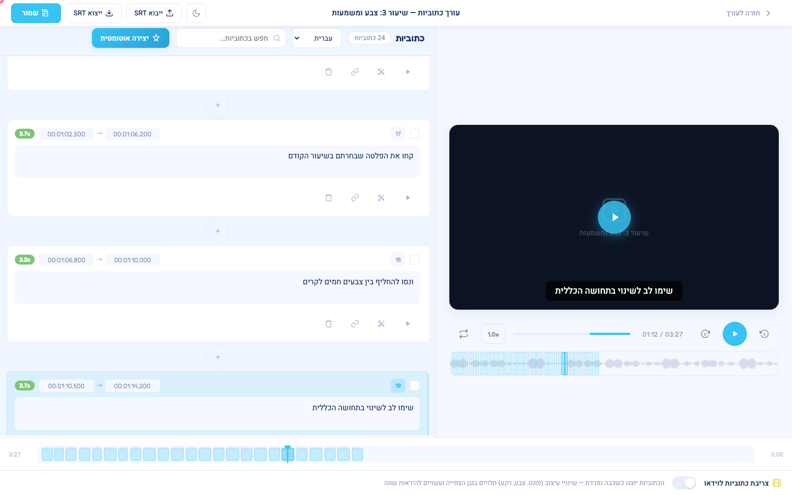
- **ללא צריבה** — הכתוביות מוצגות כשכבה נפרדת בנגן. שינויי העיצוב תלויים בנגן הצפייה. - **עם צריבה** — הכתוביות נחרטות על הווידאו עצמו, בדיוק בעיצוב שקבעתם.
studio-subtitles-burnin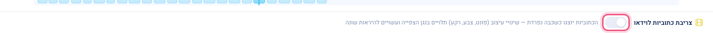
בסרגל הצד, תחת "ניווט ראשי", לוחצים על **בורדי**. נפתח מרכז המשימות — מסך הבית של בורדי.
boardi-hub-home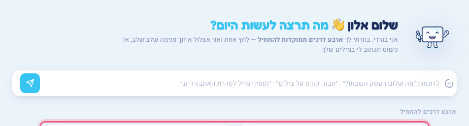
בתחתית מרכז המשימות יש אזור **המשך מאיפה שהפסקת** — טיוטות קורסים, סקירות וניתוחים שהתחלתם. לחיצה על שורה מחזירה אתכם ישר לעבודה.
boardi-hub-recent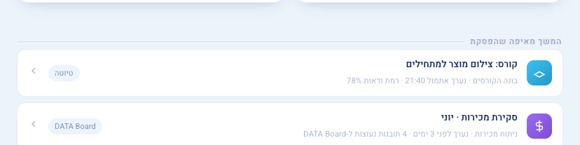
בורדי שואל שאלות קצרות, אחת-אחת: מה תחום הקורס, למי הוא מיועד, מה מטרת הבוגר בסיום, כמה תוכן אתם מדמיינים ואיזה סגנון למידה מתאים. על רוב השאלות עונים בלחיצה על אחת האפשרויות, ואפשר תמיד לענות חופשי בשדה הטקסט — או לכתוב "תציע אתה" ולתת לבורדי להחליט.
boardi-builder-chat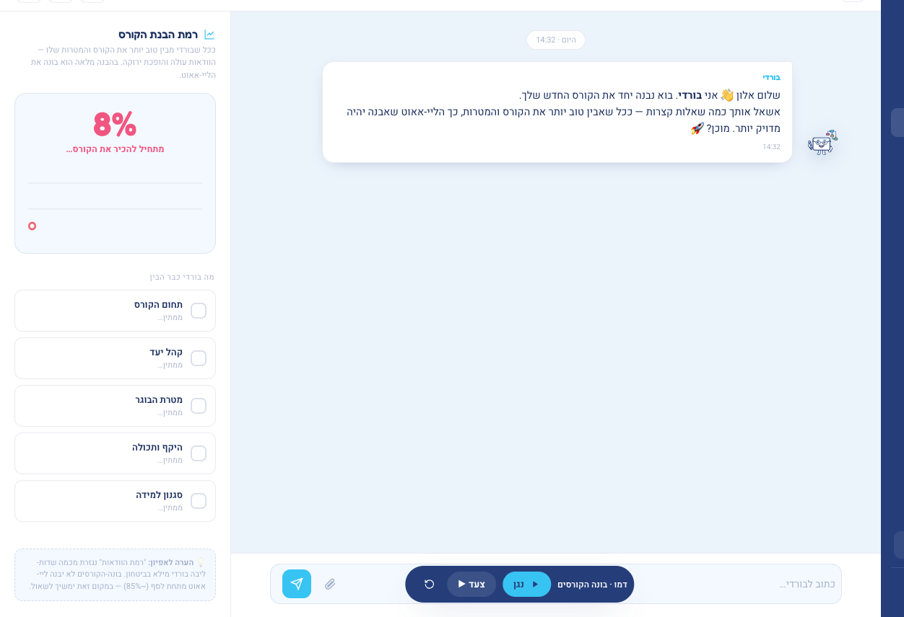
בצד המסך יש מד **רמת הבנת הקורס**. ככל שבורדי מבין טוב יותר את הקורס והמטרות — האחוז עולה, ורואים בדיוק אילו פרטים הוא כבר הבין: תחום הקורס, קהל יעד, מטרת הבוגר, היקף ותכולה וסגנון למידה. בונה הקורסים לא יבנה ליי-אאוט לפני שההבנה מספיק גבוהה.
boardi-builder-certainty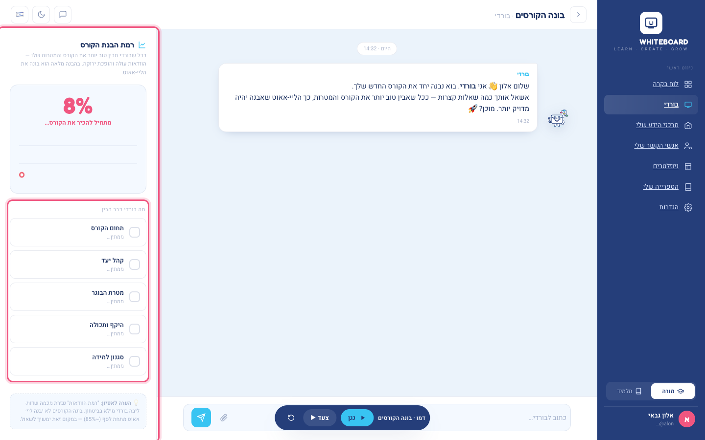
בורדי מציע ארבעה תחומי ניתוח בכרטיסים מהירים: **סקירה כללית**, **שיווק**, **מכירות** ו**שירות · איכות** (השלמה, שביעות רצון ונקודות נטישה). לוחצים על כרטיס — או כותבים שאלה משלכם בשדה הטקסט, למשל "מי בסיכון נטישה עכשיו?".
boardi-analyst-chat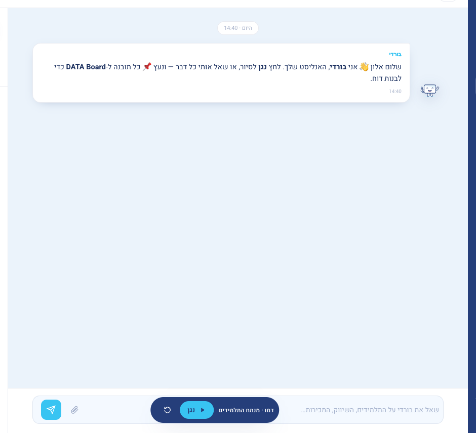
ליד כל כרטיס נתונים והמלצה יש כפתור נעיצה 📌. לחיצה מעבירה את התובנה ל-**DATA Board** — הלוח שבצד המסך. שם גם מחכה אזור **בורדי ממליץ לנעוץ** עם התראות חמות: תלמידים בסיכון, נקודת נטישה בשיעור מסוים, שינויים בעלות לליד ועוד. לחיצה על התראה שולחת לבורדי את השאלה המתאימה.
boardi-analyst-databoard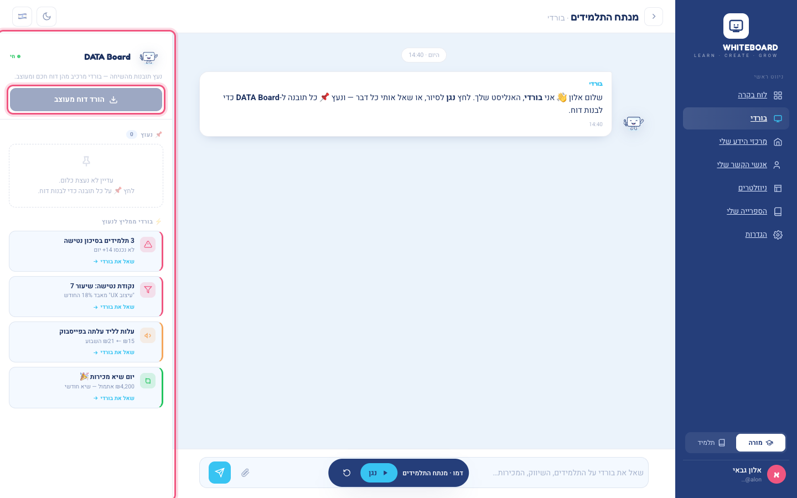
אפשר גם לכתוב חופשי, למשל "תן לי סקירת מכירות של החודש".
boardi-sales-chatכמו במנתח התלמידים, כל תובנה ניתנת לנעיצה 📌 ל-**DATA Board**, ובראש הלוח מחכות התראות שכדאי לבדוק — יום שיא מכירות, עגלות נטושות, הזדמנות אפסייל. בסיום לוחצים **הורד דוח מעוצב** ומקבלים דוח מכירות ממותג עם כל מה שנעצתם.
boardi-sales-databoardבתפריט הצד לוחצים על **מרכזי הידע שלי**. בראש המסך מופיעים כרטיסי הסוגים: הקורסים שלי, בתי ספר, תכניות הכשרה ומועדונים — עם מונה לכל סוג. מתחתיהם רשימת הקורסים והמרכזים הקיימים שלכם.
hub-knowledge-hubs-cards2. **תיאור** — עד 300 תווים. מופיע לתלמידים בדף בית הספר. 3. **כתובת URL** — הכתובת הייחודית שבה תלמידים יגיעו לבית הספר, בפורמט `whiteboard.education/schools/...`.
school-settings-detailsבקטע **נראות** בוחרים מי רואה את בית הספר: **ציבורי** — פתוח לכולם, או **פרטי — בהזמנה בלבד**.
school-settings-visibilityנכנסים לבית הספר עצמו. כמרצים אתם רואים אותו במצב עריכה: סרגל עליון מציג "מצב עריכה — בית ספר", ואפשר לגרור קורסים לשינוי סדר וללחוץ על כל כרטיס לעריכה. כפתור **תצוגה מקדימה** מראה איך האתר נראה לתלמיד, ומתג תלמיד/מרצה בפינה מחליף בין נקודות המבט.
school-edit-bannerבלשונית **הגדרות** של בית הספר, בקטע **תבנית בית הספר**, לוחצים על התבנית הרצויה. התבנית המסומנת בווי היא הפעילה.
school-settings-template-gridדף שיווקי ארוך בסגנון דף נחיתה: כותרת גדולה עם קריאה לפעולה, סרטון הסבר, רצועת מספרים, קורס מוביל מודגש לצד רשת קורסים, אזור "הכירו את המרצה", המלצת תלמיד וקריאה לפעולה סוגרת. מתאים כשבית הספר הוא גם דף המכירה המרכזי שלכם.
school-template-premium-heroבתפריט העליון של בית הספר לוחצים על **הקורסים שלנו**. כמרצים אתם רואים את העמוד במצב עריכה — כל רכיב שלוחצים עליו נפתח לעריכה. בראש העמוד באנר עם תגית מבצע, כותרת ראשית ושדה חיפוש לתלמידים.
school-store-heroשימו לב לסימון "אוטומטי" ליד הדירוג וההתקדמות — הנתונים האלה נמשכים מהמערכת ולא נערכים ידנית.
school-store-course-cardבתחתית החנות ארבעה כרטיסי יתרונות (למשל: גישה לצמיתות, תעודת סיום, תמיכה אישית). לוחצים על אייקון העריכה שעל כל כרטיס ומעדכנים כותרת וטקסט — כדאי להתאים אותם למה שאתם באמת מציעים.
school-store-features3. **מה תלמדו כאן?** — כרטיסי תחומי הלימוד המרכזיים. 4. **מה אומרים התלמידים** — כרטיסי המלצות עם ציטוט, שם ותפקיד.
school-about-headerעמוד השאלות הנפוצות הוא אקורדיון: כל פריט מציג שאלה, ולחיצה פותחת את התשובה. כותבים כאן את מה שבאמת שואלים אתכם — גישה לתכנים, תעודות, תשלומים, מדיניות החזרים והתאמה למתחילים. בתחתית העמוד תיבת "לא מצאת תשובה?" שמפנה לצור קשר.
school-faq-itemעמוד צור קשר כולל את ערוצי הקשר שלכם — אימייל, צ'אט וטלפון עם שעות פעילות — וטופס **שלחו לנו הודעה** עם שדות שם מלא, אימייל, נושא והודעה, לצד ציון זמני מענה.
school-contact-formבלשונית **הגדרות**, בקטע **פרטי המועדון**, ממלאים שם (עד 80 תווים), תיאור (עד 300 תווים) וכתובת URL בפורמט `whiteboard.education/clubs/...`. משם גם מעתיקים את הקישור הציבורי לשיתוף עם מצטרפים פוטנציאליים.
club-settings-detailsבקטע **תמחור ומנוי** מגדירים מחיר מנוי חודשי ומחיר מנוי שנתי. רוצים מועדון פתוח? מפעילים את המתג **מועדון חינמי** — המחיר מתאפס והמועדון נפתח לכולם ללא תשלום.
club-settings-pricing- להזמין חברים - לצפות בלוח המובילים
club-settings-permissions
בקטע **צ'אט מועדון** בוחרים איך הקהילה מתקשרת: **צ'אט פתוח** — כולם מדברים בחופשיות, **צ'אט עם מורה** — אתם מנהלים את השיחה והחברים מגיבים, או **ללא צ'אט** — הצ'אט מוסתר לגמרי.
club-settings-chat-modesנכנסים למועדון עצמו. עמוד הבית כולל כרטיס ברוכים הבאים עם סרטון קבלת פנים, נתוני המועדון, הודעות אחרונות (מוסיפים עם **הוסף הודעה**) ורשימת אירועים קרובים. במצב עריכה השינויים נשמרים אוטומטית, ו**פרסם שינויים** מעלה אותם לאוויר.
club-home-welcomeנכנסים ל**פיד המועדון** מסרגל הניווט. בראש הפיד תיבת "שתפו משהו עם הקהילה..." — כותבים, מצרפים **תמונה** או **סרטון**, ולוחצים **פרסם**. פוסט שלכם מסומן בתגית "מרצה" ליד השם, כך שהחברים מזהים אתכם מיד. כפתור **פרסם הודעה** בסרגל העריכה עושה את אותו הדבר מכל מקום במסך.
club-feed-composeבצד הפיד רשימת **נושאים** עם מונה פוסטים לכל נושא — לחיצה על נושא מסננת את הפיד. כל פוסט נושא תגית נושא צבעונית, כך שגם בקהילה גדולה קל למצוא את השיחות הרלוונטיות.
club-feed-topicsכמרצים יש לכם שליטה מלאה על הפיד: נועצים פוסט חשוב בראש הפיד (יופיע עם סימון "נעוץ על ידך"), מסירים פוסטים שלא במקום, ומסננים לפי נושאים. **הגדרות פיד** בסרגל העריכה מרכז את אפשרויות הניהול.
club-feed-post-pinnedבמסך **אירועים** לוחצים **אירוע חדש**. האירועים מוצגים בשלוש תצוגות — **לוח שנה**, **רשימה** ו**הקלטות** — עם דפדוף בין חודשים. כל אירוע מסומן כ**אונליין** או **פרונטלי**, עם תאריך, שעה ומיקום, ומופיע גם כרכיב צבעוני על התאריך בלוח.
club-events-calendarוובינר יכול לקבל חדר ייעודי — ערוץ סגור שרק לקוחות שנרשמו לוובינר רואים, מסומן בתגית **לקוחות בלבד** ובמנעול ברשימת הערוצים. שם ממשיכים את השיחה אחרי המפגש, עונים על שאלות ומשתפים חומרים. לוחצים **חדר וובינר חדש** ליצירת חדר, ו**ניהול חדרים** לניהול ההרשאות וההודעות.
club-webinar-roomהחברים רואים את האירועים הקרובים בעמוד הבית של המועדון ובצד מסך האירועים — עם תאריך, שעה, סוג (אונליין או פרונטלי) וכפתור **הירשם**. אחרי ההרשמה הזימון מגיע אליהם, ובחדרי וובינר שהם זכאים להם הם מוצאים את המשך השיחה והחומרים.
club-events-upcoming
כל חבר שולט בהתראות שלו מהפרופיל האישי — בקטע **העדפות התראות** יש מתג ייעודי ל**תזכורות אירועים**, לצד עדכוני מועדון ושיעורים חדשים.
club-notification-prefsהשיחה מחולקת לערוצים, מסודרים בקבוצות: **ערוצים כלליים** (כללי, הודעות, שאלות ותשובות), **קורסים** — ערוץ לכל קורס, ו**נושאים**. לוחצים **ערוץ חדש** להוספת ערוץ. חלוקה טובה שומרת על שיחה ממוקדת — שאלות על קורס מסוים לא מתערבבות עם פטפוט כללי.
club-chat-channelsהחבר רואה את רשימת הערוצים עם נקודת חיווי על ערוצים שיש בהם הודעות חדשות. בתוך ערוץ: כותרת עם תיאור ומספר החברים, הודעות עם חלוקה לפי ימים, וההודעות שלו מיושרות לצד השני. בתחתית תיבת כתיבה עם צירוף קבצים. חדרי וובינר שהוא לא זכאי להם מסומנים במנעול — נכנסים רק לקוחות שנרשמו.
club-chat-messagesנכנסים ל**לוח מובילים** מסרגל הניווט של המועדון. בראש המסך פודיום עם שלושת המובילים, ומתחתיו טבלת הדירוג המלאה — חבר, נקודות, שיעורים ושינוי במיקום. לשוניות **השבוע**, **החודש** ו**כל הזמן** מחליפות את טווח הזמן.
club-leaderboard-podiumמסך **חברים** מציג את כל חברי המועדון בכרטיסים, עם חיפוש וסינון מהיר: **כולם**, **פעילים**, **מרצים**, **חדשים**. כל כרטיס מציג את נתוני הפעילות של החבר (פוסטים, שיעורים, נקודות) ותגית מצב כמו "פעיל" או "פעילה מאוד" — כך מזהים בקלות גם את המובילים וגם את מי שנעלם וכדאי לחזר אחריו.
club-members-gridבלשונית **ליי-אאוט**, ברצועת **קורסים בתכנית**, לוחצים **הוסף קורס** לכל קורס שנכנס למסלול. כל קורס מקבל מספר סידורי, וגוררים את הכרטיסים כדי לשנות את הסדר. סמלי השרשרת בין הקורסים מציינים נעילה — עליהם בהרחבה במדריך [מסלול הלמידה](program-layout).
program-ribbon-chainבוחרים קורס ברצועה, ומתחתיו נפתח עורך התוכן שלו: פרקים, ובכל פרק טבלת שיעורים עם שם, סוג, מקור, סטטוס ותאריך. **הוסף פרק חדש** יוצר פרק, **הוסף שיעור** מוסיף שורה, וגרירה משנה סדר. לכל שיעור קובעים סטטוס: **פורסם**, **טיוטה** או **מוסתר**.
program-lessons-tableבקטע **תמחור** מגדירים את מחיר התכנית ואת תקופת הגישה — כמה זמן התלמיד יקבל גישה מרגע הרכישה: ימים, שבועות, חודשים, שנים או לתמיד.
program-settings-pricingבלשונית **הגדרות** של התכנית, בקטע **סדר קורסים ונעילה**, מפעילים את המתג **חובה לעבור קורסים לפי סדר** — הקורס הבא יינעל עד שהתלמיד ישלים את הקורס הנוכחי. מפת הקורסים מציגה את השרשרת, ולכל קורס קובעים **אחוז השלמה מינימלי** שנדרש כדי לפתוח את הבא.
program-sequential-lock
לשונית **פגישות** מרכזת את כל הפעילות: כרטיסי סיכום (פגישות השבוע, ממתינות לאישור, סה"כ החודש, שעות ליווי), יומן שבועי, וטבלת **בקשות ממתינות לאישור** שבה לוחצים **אשר** או **דחה** לכל בקשה. בלחיצה על פגישה ביומן נפתח פאנל עם הפרטים, קישור הזום, הערות וכפתורי **שלח תזכורת** ו**בטל פגישה** — ואפשר גם
program-meetings-pendingבדשבורד התכנית של התלמיד, **מפת מסלול הלמידה** מציגה את הקורסים כתחנות: הושלם, פעיל, ונעול. קורס נעול מסומן ב"נעול" עד שעומדים בתנאי ההשלמה, כרטיס "המשך מאיפה שעצרת" מחזיר לשיעור הבא, והפגישה הקרובה מופיעה בכרטיס משלה עם קישור ליומן.
program-student-roadmapבפינת הכותרת של המסך לוחצים על הכפתור הראשי **הוסף תלמיד**.
students-add-buttonהתלמיד החדש מופיע בטבלת התלמידים. בסרגל מעל הטבלה יש טאבים לסינון מהיר — **כל התלמידים**, **פעילים** ו**לידים** — עם מונה ליד כל אחד, כך שרואים מיד כמה הצטרפו בפועל.
students-table-toolbarלכל מדד מוצמד חץ מגמה ביחס לתקופה הקודמת.
students-screen-overview- **שלח הודעה** (אייקון מעטפה) — פנייה ישירה לתלמיד - **הסר תלמיד** (אייקון פח) — הסרה מהקורס
students-row-actionsבמסך **התלמידים שלי**, בעמודת הפעולות של השורה, לוחצים על אייקון הפח (**הסר תלמיד**).
students-remove-actionכדי לקבל התראה על כל תלמיד חדש שנרשם לקורס, מפעילים בפרופיל האישי, באזור **התראות**, את המתג **עדכונים על תלמידים חדשים**.
students-signup-alert-toggleהמחיר שקבעתם מופיע אוטומטית בתיבת המחיר בדף הנחיתה של הקורס — לצד כפתור **הצטרף לקורס עכשיו** וההטבות שמקבלים ברכישה (למשל גישה לכל החיים ותעודת סיום).
sales-landing-price-box- **מספרים** — תלמידים, שיעורים ודירוג. - **תיבת המחיר** — המחיר, כפתור **הצטרף לקורס עכשיו** וההטבות שמקבלים ברכישה.
sales-landing-previewלוחצים על **שתף דף** — נפתח חלון עם הקישור הישיר לדף הנחיתה. מעתיקים עם **העתק** ומפיצים בכל ערוץ: רשתות חברתיות, דיוור או קמפיין ממומן.
sales-landing-shareשורת הכרטיסים בראש המסך נותנת תמונת מצב מהירה: סה"כ אנשי קשר, תלמידים, חברי מועדון, לידים וביטולי הרשמה.
crm-contacts-stats- **תגיות** — תיוג חופשי שלכם ("VIP", "תל אביב", "חם"). - **תאריך הצטרפות**.
crm-contacts-tableבצד מוצג הפרופיל: שם, תגי סוג (תלמיד, חבר מועדון, VIP), מייל, טלפון, עיר, מקור ההצטרפות ומי הזמין אותו. מתחת — שלוש פעולות מהירות: **התקשר**, **WhatsApp** ו**מייל**, ואזור התגיות שבו מוסיפים תגית עם **+ תגית**.
crm-contact-profileבטאב **פעילות** מוצג ציר זמן של כל אירוע, מהחדש לישן: צפייה בשיעור, פתיחת מייל ולחיצה על קישור, תשלום או חידוש מנוי, הרשמה לקורס והערות שהוספתם. זה המקום להבין "מה קורה עם הלקוח הזה" בשניות.
crm-contact-timeline- **זמן צפייה אחרונה** — ריענון לתלמידים שלא צפו לאחרונה, כדי להחזיר אותם ללמידה. - **סיום קורס** — לתלמידים שסיימו את כל השיעורים. הזדמנות טובה להציע את הקורס הבא.
mail-triggers- **מתוזמן** — ממתין לתאריך שנקבע. - **טיוטה** — עוד לא נשלח.
mail-campaigns-tableבוחרים איך לבנות: **עורך ויזואלי** (מומלץ) או **בניית HTML** למתקדמים, ולוחצים **המשך לעורך**. אפשר גם **שמור טיוטה** ולחזור בהמשך.
mail-new-setupלוחצים **הוסף בלוק תוכן** או גוררים בלוק מהמגירה הצדדית למיקום הרצוי. בין הבלוקים: כותרת ראשית וכותרת משנה, גוף טקסט, ציטוט, מפריד, כפתור CTA, תמונה / GIF, מרווח, רשתות חברתיות, חתימה אישית, כרטיס קורס/מוצר, תמונה + טקסט, תיבת העתקה / קופון, גלריית תמונות, טיימר ספירה לאחור ופוטר כתובת ופרטי קשר.
mail-editor-blocks- **ערבב שאלות** — סדר שאלות אקראי לכל תלמיד. - **הגבלת זמן** — מפעילים וקובעים דקות.
exam-editor-settingsלוחצים **הוסף שאלה**, מקלידים את נוסח השאלה ואת אפשרויות התשובה. את התשובה הנכונה מסמנים בלחיצה על העיגול שלצד האפשרות. אפשר להוסיף אפשרות עם **הוסף אפשרות**, למחוק אפשרות (נדרשות לפחות 2), לגרור שאלות לשינוי סדר ולמחוק שאלה שלמה.
exam-editor-questionלכל שאלה אפשר להגדיר **הפניה לשיעור**: בוחרים שיעור מהקורס ומקלידים חותמת זמן (דק:שנ). כשתלמיד טועה בשאלה, במקום לראות רק את התשובה הנכונה — הוא צופה בקטע הרלוונטי מהשיעור שמסביר אותה. **צפה בקטע** מאפשר לוודא שבחרתם את הרגע הנכון.
exam-editor-video-refהתלמיד מגיע למבחן ממסלול הלמידה ומקבל מסך פתיחה: מספר השאלות, ציון העובר ומגבלת הזמן — ואם המבחן חוסם, אזהרה ברורה: "חובה לעבור את המבחן כדי להתקדם לשיעור הבא". לוחצים **התחל מבחן** ועונים שאלה-שאלה, עם מונה התקדמות, טיימר וניווט **הקודם / הבא**. לפני הגשה מופיע אישור — אחרי הגשה אין חזרה.
exam-student-start
בסיום התלמיד רואה את הציון בטבעת גדולה עם **סקירת שאלות** מלאה — התשובה שלו מול הנכונה. עבר? באנר "השיעור הבא נפתח" וכפתור **לשיעור הבא**. נכשל? הוא רואה כמה ניסיונות נשארו, אילו שיעורים כדאי לחזור עליהם, ובכל שאלה שגויה שהגדרתם לה הפניה — כרטיס **צפה בהסבר מהשיעור** שמנגן את הקטע המדויק.
exam-student-results-failedארבעה כרטיסים בראש המסך מסכמים את המבחן: **ממוצע ציון**, **עברו**, **נכשלו** (מתוך סך הנבחנים) ו**ציון גבוה ביותר**.
exam-results-kpisטבלת **תוצאות תלמידים** מציגה לכל תלמיד את הציון, הסטטוס (עבר/נכשל), מספר הניסיון ותאריך ההיבחנות. לוחצים על כותרת עמודה כדי למיין, ועל אייקון הצפייה בשורת תלמיד כדי לראות את המבחן שלו.
exam-results-tableפאנל **ניתוח שאלות** מציג לכל שאלה את אחוז העונים נכון. שאלה עם אחוז הצלחה נמוך במיוחד מסומנת בתג **שאלה בעייתית** — רמז שהנוסח מבלבל או שהחומר לא כוסה מספיק בשיעור.
exam-results-questionsבגלריית **בחר תבנית תעודה** יש ארבע תבניות: **קלאסית**, **מודרנית**, **מקצועית** ו**יצירתית**. ערכת המותג שלכם — צבעים ולוגו — מוזרקת אוטומטית לכל תבנית, ותצוגה מקדימה חיה בצד מתעדכנת עם כל בחירה.
cert-template-gallery- **טקסט מותאם** — המשפט שמופיע מעל שם התלמיד (למשל "הוענקה בהצלחה ל:"). - **חתימת מרצה** — גוררים תמונת חתימה או מקלידים את שם המרצה.
cert-settingsכשתלמיד עומד בתנאים, הוא מקבל מסך חגיגי עם התעודה שלו: שם, תאריך הנפקה, מספר סידורי, חתימה ו-QR. משם הוא יכול ל**הורד PDF**, לשתף ב-**LinkedIn** או ב-**WhatsApp**, ולראות סיכום של מה שהשלים בתכנית.
cert-issued**תשחץ (חיפוש מילים)** — התלמידים מחפשים מילים מהחומר ברשת אותיות, על הזמן. אתם קובעים את רשימת המילים, את גודל הרשת ואת כיווני החיפוש. המדריך המלא: [משחק התשחץ — בנייה ועריכה](game-crossword).
game-wordsearch-play**זיכרון** — משחק זוגות של רמז ותשובה: הופכים כרטיסים ומחפשים התאמות, למשל מונח מול ההגדרה שלו. רמז יכול להיות טקסט או תמונה. המדריך המלא: [משחק הזיכרון — בנייה ועריכה](game-memory).
game-memory-play**איש תלוי** — התלמידים מנחשים מילה מהחומר אות-אות, עם מגבלת טעויות ורמז אופציונלי. יש ניקוד וסיבובים. המדריך המלא: [משחק איש תלוי — בנייה ועריכה](game-hangman).
game-hangman-play- **גודל רשת** — 8×8, 10×10, 11×11 או 13×13. - **כיוונים** — אופקי, אנכי ואלכסוני. אפשר לסמן כל שילוב.
game-wordsearch-edit- **הגבלת זמן** — מפעילים וקובעים דקות, או משאירים חופשי. - **ערבב כרטיסים** — סדר אקראי בכל פתיחה של המשחק.
game-memory-edit- **מקסימום טעויות** — 5, 7 או 9. - **הצג רמז** — האם התלמיד רואה את הרמז ליד המילה.
game-hangman-edit- **משך מוערך** — מ-30 ועד 120 דקות. - **מספר משתתפים מקסימלי**.
live-schedule-formכל מה שמכינים כאן יחכה לכם בחדר השידור, מוכן לשליחה בלחיצה.
live-schedule-interactiveתחת **הזמן משתתפים** בוחרים בין **כל תלמידי הקורס** לבין **בחירה ידנית** של תלמידים ספציפיים. לוחצים על **צור שיעור חי**, בודקים את הפרטים בחלון האישור ולוחצים **שלח זימון** — כל התלמידים מקבלים הודעה עם לינק ישיר למפגש.
live-schedule-confirm- **סרגל צד** — שלושה טאבים: **משתתפים**, **צ'אט** ו**אינטראקציות**. - **סרגל תחתון** — כפתורי השליטה המהירים.
live-room-overviewבסרגל התחתון נמצאים כפתורי **מיקרופון**, **מצלמה** ו**שיתוף מסך**. כששיתוף המסך פעיל מופיע החיווי "שיתוף מסך פעיל", והווידאו שלכם עובר לחלון קטן (PiP) כדי שהתלמידים ימשיכו לראות אתכם.
live-room-bottom-bar- **הפוך למציג** - **הסר מהשיעור**
live-room-sidebar-tabsבסרגל הצד של [חדר השידור](/live-room) לוחצים על **אינטראקציות** (או על **כלים אינטראקטיביים** בסרגל התחתון). ברשת הכלים בוחרים **סקר מהיר** או **שאלה חיה**.
live-tools-gridלוחצים **שלח סקר** — והוא מופיע אצל כל התלמידים.
live-poll-teacher-panelלוחצים **שלח שאלה**. כשהתלמידים עונים רואים את מונה העונים, את פילוח התשובות ואת **טבלת המובילים**.
live-quiz-teacher-panel**בסקר** — האפשרויות עם אחוזי ההצבעה, אישור "הצבעתך נרשמה" והזמן שנותר:
live-poll-student-view**בשאלה חיה** — טיימר עצר, תשובות A–D, ואחרי המענה חיווי נקודות ("+100 נקודות!") ומיקום אישי בלוח המובילים ("מקום 3 מתוך 28"):
live-quiz-student-viewלכל חדר אפשר לתת שם משלו (למשל "צבעים חמים"), ומי שטרם שובץ מופיע באזור **ללא שיבוץ** — גוררים אותו לחדר המתאים.
live-breakout-modalברגע הפיצול התלמיד מקבל מסך מעבר: "הועברת לחדר דיון", עם שם החדר, מספר המשתתפים בו והזמן שנותר. בתוך החדר הוא רואה את חברי הקבוצה שלו בלבד, כפתור **חזרה לחדר ראשי** והערה שהמרצה יחזיר אותו בסיום הדיון.
live-breakout-student-viewתחת **שיעורים חיים** נכנסים אל **ערכות מוכנות**. כל ערכה מוצגת ככרטיס עם תיאור, מספר פריטים וכמה פעמים השתמשתם בה. מכאן אפשר **לערוך**, לשכפל או למחוק ערכה.
live-presets-libraryכל פריט מופיע ככרטיס ברשימת **פריטים בערכה**: לחיצה עליו פותחת את הפרטים המלאים (השאלה, האפשרויות והתשובה הנכונה), וידית הגרירה משנה את הסדר.
live-preset-editorקובעים **משך זמן** (דקה עד 5 דקות) ולוחצים **הפעל משחק**.
live-game-teacher-panelהמשחק עולה מעל השידור אצל כולם. אתם רואים את לוח המשחק, טיימר, מספר המשתתפים שמשחקים — ולצדם **לוח מובילים** שמתעדכן חי וסרגל נתונים (זוגות שנמצאו, ניסיונות, מי מוביל).
live-game-overlayהמשחק נפתח אצל התלמיד מעל הווידאו: לוח המשחק במרכז, טיימר ומספר המשתתפים למעלה, ולצד הלוח **טבלת מובילים** שבה השורה שלו מסומנת ("את/ה"). כל התאמה נכונה מזכה בנקודות ומטפסת בטבלה.
live-game-student-viewכל הקלטה מוצגת ככרטיס עם תמונה ממוזערת, משך, תאריך, מספר משתתפים ומספר צפיות. מחפשים לפי שם בשדה **חפש הקלטה...**.
live-recordings-listלחיצה על הקלטה פותחת אותה בנגן הצדדי. מתחת לנגן מופיעים **פרקים** עם חותמות זמן — לחיצה על פרק קופצת ישירות לאותו רגע בהקלטה.
live-recordings-playerבראש המסך ארבעה כרטיסים עם חיווי שינוי לצד כל אחד: תלמידים פעילים, דירוג ממוצע, צפיות בשיעורים וזמן צפייה כולל.
analytics-kpis- **התקדמות תלמידים** — התפלגות: כמה סיימו, כמה באמצע וכמה כמעט לא התחילו. - **השלמה לפי שיעור** — אחוז המסיימים של כל שיעור. ירידה חדה בין שיעור לשיעור היא הסימן הכי ברור לנקודת נטישה: אולי השיעור ארוך מדי, אולי קשה מדי.
analytics-progressטבלת **פעילות תלמידים** מציגה לכל תלמיד את ההתקדמות, מספר השיעורים שסיים, מתי נראה לאחרונה וסטטוס. תלמיד שלא נכנס שבועיים — מועמד טבעי למייל תזכורת.
analytics-students-table- דירוגים ושביעות רצון - תוכן הקורסים
analytics-native-sources- **Google Analytics** — תנועה, מקורות ביקור וסשנים לאתר הקורסים (GA4). - **Google Ads** — ביצועי קמפיינים בגוגל, עלות ותשואה.
analytics-external-connectionsבסרגל הצד לוחצים **הגדרות**. בראש המסך יש חיווי שמירה — כשכתוב "כל השינויים נשמרו" אפשר לצאת בראש שקט.
settings-tabs- **פרטי שולח** — שם השולח, אימייל השולח, אימייל למענה וכתובת פיזית (נדרשת לפי תקני דיוור בינלאומיים כמו CAN-SPAM). - **מייל בדיקה** — **שלח מייל בדיקה** מוודא שההגדרות תקינות לפני שקהל אמיתי מקבל משהו.
settings-email-senderמתחת לצבעים יש מחוון **עגלות פינות** שקובע עד כמה הכפתורים מעוגלים, עם כפתור דוגמה חי.
settings-brand-colorsבסרגל התצוגה עוברים בין שלוש נקודות המבט של הלקוח: **דף נחיתה**, **מיילים** ו**דף הקורס** — ובין תצוגת **שולחן עבודה** ל**נייד**. כך רואים את המותג בכל הקשר לפני שמפרסמים.
settings-brand-previewWHITEBOARD מגיעה עם אינטגרציות מובנות לכלים שאתם כבר עובדים איתם — Google Analytics, Facebook Pixel ו-Vimeo, ו-Zapier בדרך. המסך תחת **הגדרות ← אינטגרציות** מרכז את כולן בקבוצות, ולצד כל אחת סטטוס: מחובר, לא מחובר או בקרוב. המאמר הזה הוא מפה קצרה — לכל חיבור יש מדריך ייעודי עם שלבי ההטמעה המלאים.
settings-integrations-marketingמדריך ההטמעה המלא זמין גם בתוך המערכת: **הגדרות ← אינטגרציות ← מטא ← "?" ← למדריך ההטמעה**. בצד המדריך יש פאנל **פרטי החיבור שלך** — ממלאים את השדות והקודים נוצרים אוטומטית.
settings-guide-metaהמדריך המלא זמין בתוך המערכת: **הגדרות ← אינטגרציות ← Google Analytics ← "?" ← למדריך ההטמעה**, ולצידו פאנל **פרטי החיבור שלך** שמייצר את הכתובות אוטומטית.
settings-guide-googleמדריך ההטמעה המלא זמין בתוך המערכת: **הגדרות ← אינטגרציות ← Vimeo ← "?" ← למדריך ההטמעה**.
settings-guide-vimeoמדריך ההטמעה המלא זמין בתוך המערכת: **הגדרות ← אינטגרציות ← Google Calendar ← "?" ← למדריך ההטמעה**.
settings-guide-calendarמדריך ההטמעה המלא זמין בתוך המערכת: **הגדרות ← אינטגרציות ← Make.com ← "?" ← למדריך ההטמעה**.
settings-guide-make- התראות ביטול מנוי — במסך האינטגרציות יש מתג **תזכורות ביטול מנוי** ששולח התראה דרך ה-Webhook כשמנוי מבוטל או עומד להסתיים, לנמענים שתגדירו. - **שלח בדיקה** — שולח הודעת דמו ל-Webhook כדי לוודא שהצינור עובד.
settings-integrations-automationאחרי ההתחברות אתה נוחת במסך **הקורסים שלי** — הבית שלך במערכת. כאן מופיעים כל הקורסים שיש לך גישה אליהם, כולל ההתקדמות שלך בכל אחד.
stu-my-coursesבתחתית התפריט נמצא מתג **מצב תצוגה** (תלמיד / מרצה) — רלוונטי רק אם אתה גם מלמד במערכת — והפרופיל שלך.
stu-sidebarבספרייה מרוכז התוכן שלך בתיקיות — למשל תיקיית **הקורסים שלי** ותיקיית **תוכן** עם קבצים. אפשר לחפש, לעבור בין תצוגת רשת לרשימה ולנווט פנימה בלחיצה על תיקייה.
stu-library-folders- **אזור השיעור** — הווידאו או התוכן של השיעור הנוכחי, ומתחתיו קבצים נלווים. - **פס צד דק** — כפתורים מהירים למחברת הקורס, לפתקים, לבורדי ולהגדרות.
stu-player-overviewבסרגל הצד כל פרק נפתח ונסגר בלחיצה, וכל שיעור מציג את השם והמשך שלו. שיעורים שסיימת מסומנים, והשיעור הנוכחי מודגש. יש גם שדה **חפש שיעור...** למציאת שיעור ספציפי.
stu-player-sidebar- **מהירות ניגון** — מ-0.5× ועד 2×. - מיקומך בקורס — "שיעור X מתוך Y".
stu-player-bottom-barבנגן הקורס, לחץ על כפתור הפתקים בפס הצד. נפתח פאנל **הפתקים שלי** — כותבים את ההערה ולוחצים **שמור פתק**. הפתק נשמר יחד עם נקודת הזמן הנוכחית בסרטון.
stu-notes-panelכל הפתקים מכל הקורסים מרוכזים במסך **הסיכומים שלי** (בתפריט הצד). כל פתק מוצג ככרטיס עם שם הקורס, השיעור, תקציר התוכן — ו**חותמת זמן**.
stu-notes-gridבתצוגת **לפי קורס** הפתקים מסתדרים כמחברת — לפי פרקים ושיעורים, עם חותמות הזמן לצד כל סיכום. משם אפשר ללחוץ **יצוא מחברת ל-PDF** ולקבל קובץ מסודר של כל הסיכומים בקורס, כולל אפשרות לכלול כותרות פרקים וציוני זמן.
stu-notes-notebookבתפריט הצד לחץ על **המועדונים שלי**. כל מועדון שאתה חבר בו מוצג ככרטיס עם מספר החברים, מספר הקורסים וההתקדמות שלך בתוכן. לחץ **כניסה למועדון**.
stu-clubs-gridבמרכז הפיד רצים הפוסטים: של המרצה (מסומן בתג **מרצה**) ושל חברי הקהילה. הודעות חשובות שהמרצה קיבע מופיעות ראשונות עם סימון נעיצה. מתחת לכל פוסט — לייק, תגובות ושיתוף.
stu-club-feedמפס הניווט הצדדי נכנסים אל **הפרופיל שלי**: תמונה, פרטים אישיים וכמה מילים עליך — ומתחת, **העדפות התראות** (עדכוני מועדון, שיעורים חדשים, תזכורות אירועים). בסיום לוחצים **שמור שינויים**.
stu-club-profileבתצוגת **לוח שנה** כל אירוע מסומן ביום שלו, עם צבע לפי סוג: מפגש אונליין, מפגש פרונטלי או הקלטה. עוברים בין חודשים עם חיצי הניווט.
stu-club-events-calendarבצד המסך מופיעים **אירועים קרובים** — לכל אירוע התאריך, השעה, המיקום (זום או כתובת פיזית) ותג **אונליין** / **פרונטלי**. לחץ **הירשם** כדי לשריין מקום.
stu-club-events-upcomingהערוצים מסודרים בקבוצות — למשל **ערוצים כלליים** (כללי, הודעות, שאלות ותשובות), ערוצים לפי **קורסים** וערוצים לפי **נושאים**. ערוץ עם הודעות שלא קראת מסומן במונה קטן. לחיצה על ערוץ פותחת את השיחה שלו.
stu-club-chat-channelsבראש השיחה מופיעים שם הערוץ והתיאור שלו. ההודעות מסודרות לפי ימים, והודעות של המרצה מסומנות בתג **מרצה**. כותבים בשורת ההודעה למטה ולוחצים שלח — אפשר לצרף גם קבצים.
stu-club-chat-messagesכשמגיעים לשיעור מסוג מבחן, מופיע מסך פתיחה עם כל מה שצריך לדעת מראש: מספר השאלות, ציון העובר והאם יש הגבלת זמן. אם המבחן חוסם — תראה גם את ההודעה "חובה לעבור את המבחן כדי להתקדם לשיעור הבא". מוכן? לחץ **התחל מבחן**.
stu-exam-startעוברים בין שאלות עם **הקודם** ו**הבא**, ואפשר לחזור ולשנות תשובה לפני ההגשה.
stu-exam-questionמסך התוצאות מציג את הציון שלך בטבעת אחוזים, את מספר התשובות הנכונות ואת ציון העובר. עברת? תראה "כל הכבוד, עברת!" והשיעור הבא נפתח. מתחת מחכה **סקירת שאלות** — כל שאלה עם התשובה שלך, ובשאלות שטעית בהן גם התשובה הנכונה.
stu-exam-results-pass- מספר הניסיונות שנותרו לך. - **נסה שוב** — לניסיון נוסף, או **חזור לחומר** לחזרה על השיעורים קודם.
stu-exam-results-fail- תאריך ההנפקה ומספר סידורי. - חתימת המרצה וקוד QR.
stu-certificate- **שתף ב-LinkedIn** — הישג כזה שווה פוסט. - **שתף ב-WhatsApp**.
stu-certificate-actionsבנגן הקורס, לחץ על כפתור בורדי בפס הצד. נפתח חלון שיחה — כותבים שאלה בשדה **שאל שאלה על הקורס...** ושולחים.
stu-boardi-chatאחרי כמה שאלות בורדי יציע לשמור לך סיכום של השיחה. לחיצה על **הוסף סיכום לפתקים שלי** כותבת את עיקרי הדברים ישירות אל [הפתקים שלך](/student-notes) — כולל הפניות לנקודות הזמן שצוינו בשיחה. משם אפשר ללחוץ **פתח בפתקים שלי** ולראות את הסיכום.
stu-boardi-actions